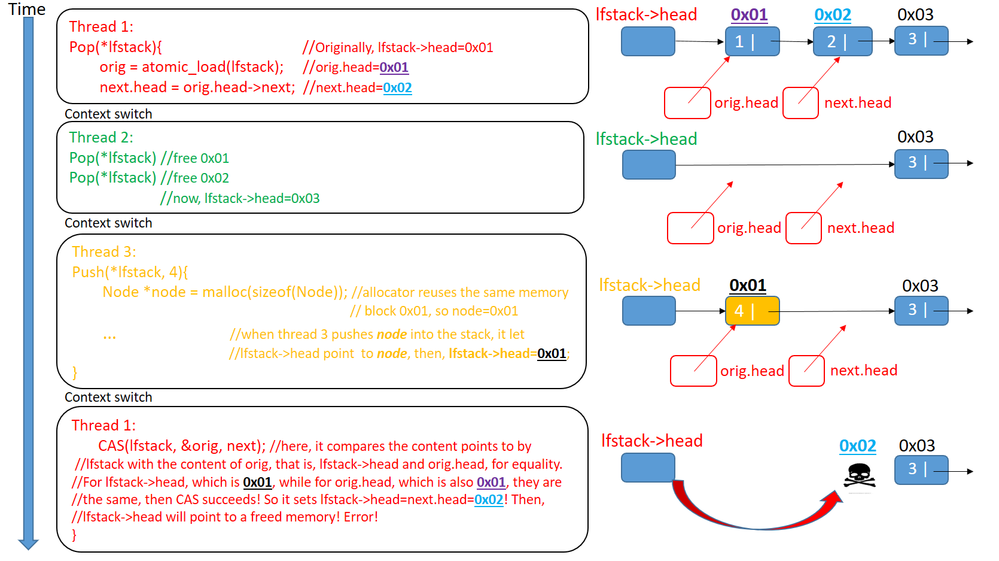

ABA problem
The use of CAS has one problem to deal with. It is called the ABA problem. The problem arises from the C of CAS, where the comparison is value based. That is, as long as the value involved in the comparison is the same, the swap can proceed. However, there are still occasions that fool the CAS solution we presented. Let's see an example where three threads concurrently access the lock-free stack we presented:(Ps: In our case, it is not necessary for the newly allocated node's content is the same as the original node, they just need to use the same memory block)
ABA Problem Solutions
The root solution to ABA problem is that we should defer reclamation while other threads are holding the node or we should have a way to identify the difference between the old node and the new node.
There are several solutions to the ABA problem, for the details, you can see this link. https://en.wikipedia.org/wiki/ABA_problem
Here, I would introduce a common solution for you.
A common workaround is to add extra "tag" or "stamp" word to the quantity being considered. For example, an algorithm using compare and swap on a pointer might use a "tag" to indicate how many times the pointer has been successfully modified. Because of this, the next compare-and-swap will fail, even if the addresses are the same, because the tag word will not match. This is sometimes called ABAʹ since the second A is made slightly different from the first.
Here , we solve the ABA problem by using the above solution. We reconstruct the stack by adding a "tag":
typedef struct _lfstack_t
{
int tag;
Node *head;
}
Every time when we use the pointer, we will increase the "tag" by 1.
void lfstack_push(_Atomic lfstack_t *lfstack, int value)
{
lfstack_t next, orig = atomic_load(lfstack);
Node *node = malloc(sizeof(Node));
node->data = value;
do{
node->next = orig.head;
next.head = node;
next.tag = orig.tag+1; //increase the "tag"
}while(!atomic_compare_exchange_weak(lfstack,&orig,next));
}
int lfstack_pop(_Atomic lfstack_t *lfstack)
{
lfstack_t next, orig = atomic_load(lfstack);
do{
if(orig.head == NULL)
{
return -1;
}
next.head = orig.head->next;
next.tag = orig.tag+1; //increase the "tag"
}while(!atomic_compare_exchange_weak(lfstack,&orig,next));
printf("poping value %d\n",orig.head->data);
free(orig.head);
return 0;
}
Don't forget to change the initialization of stack.
_Atomic lfstack_t top = {0,NULL};
Now, when we run the program again, it will not print any error information. Here is a C library called liblfds, https://www.liblfds.org/, a lock-free data structure library written in C. If you don't like to write the lock-free data structure by yourself, you could use this C library.